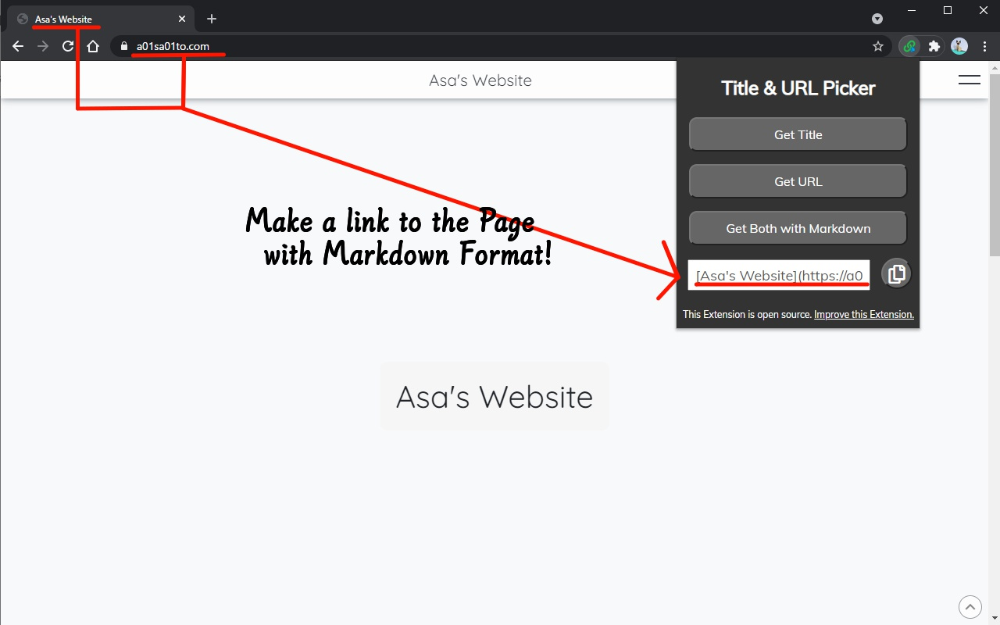

使い方
ページのタイトルを取得

- 拡張機能を開きます。
- 「Get Title」ボタンをクリックします。
- テキストボックスから、タイトルをコピーできます。
ページのURLを取得
- 拡張機能を開きます。
- 「Get URL」ボタンをクリックします。
- テキストボックスから、URLをコピーできます。
Markdown形式でページへのリンクを作成

- 拡張機能を開きます。
- 「Get both with Markdown」ボタンをクリックします。
- テキストボックスから、リンクをコピーできます。
導入方法
関係するリンク
How to Use
Get the Page's Title
- Open the Extension.
- Click "Get Title"
- Copy the Title from the Textbox with the button.
Get the Page's URL
- Open the Extension.
- Click "Get URL"
- Copy the URL from the Textbox with the button.
Create a link to the Page with Markdown Format
- Open the Extension.
- Click "Get both with Markdown"
- Copy the Link from the Textbox with the button.
Installation
Links